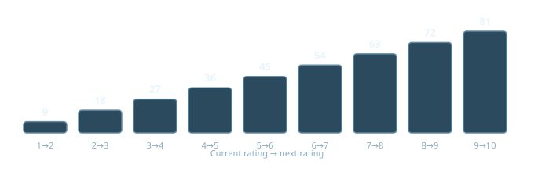
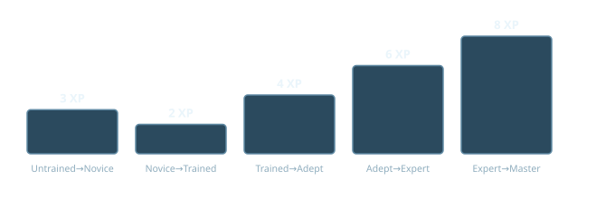
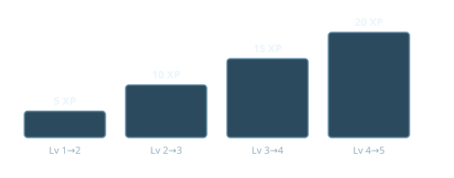

Advancement Reference
Every post-creation XP cost in the system, in plain "how much does this cost me" form.
How do I earn XP?
Up to 5 XP per session, split across five flat categories - the GM awards each independently, so a session can land anywhere from 0 to 5:
| Category | XP | What it's for |
|---|---|---|
| Attendance / Participation | 1 | Showed up and played. |
| Good Roleplaying | 1 | Played the character well. |
| Heroism / Risk Faced | 1 | Took a real risk in character. |
| Learning / Discovery | 1 | Learned something significant about the character, plot, or world. |
| Standout Moment | 1 | GM's discretion - an especially memorable beat. |
Story Awards: separate from the per-session cap - occasional larger lump-sum grants for completing a major arc, defeating a significant villain, or hitting a defined campaign milestone.
How much to raise an Attribute?
Raising an Attribute from, say, 5 to 6 costs 45 XP (the current rating before the raise). Also grants 1 free Sub-Stat point to put in either of that Attribute's two sub-stats, and 1 Descriptor for the sub-stat you chose - same as at creation.

How much to raise a Skill Tier?
Acquiring a Skill at all - Untrained to Novice - costs a flat 3 XP. It is priced on its own because it buys more than any later tier does: an Untrained roll gets no Attribute at all, so the target number is the Difficulty by itself.
After that, a tier costs the tier you're leaving, not the one you're entering. Trained (Tier 2) to Adept (Tier 3) costs 4 XP.

23 XP takes any Skill from Untrained to Master.
How much to raise a Resource Level?
Taking a Resource you don't have at all costs a flat 4 XP. After that a Level costs three times the level you're leaving, not the one you're entering - Level 1 to 2 is 3 XP, Level 4 to 5 is 12 XP.
| Step | XP |
|---|---|
| None → Level 1 | 4 |
| Level 1 → 2 | 3 |
| Level 2 → 3 | 6 |
| Level 3 → 4 | 9 |
| Level 4 → 5 | 12 |
34 XP takes a Resource from nothing to Level 5.
How much for a new Boon?
2× its creation-pool cost:
| Tier | Creation cost | Advancement (XP) |
|---|---|---|
| Trivial | 1 | 2 |
| Lesser | 3 | 6 |
| Greater | 5 | 10 |
| Legendary | 7 | 14 |
How much for a new Gift, or to raise an existing one?
Acquiring a Gift for the first time (Level 0 → 1):
Plus any Adders bought in the same purchase, at their own cost (see below).
Raising a Gift you already have:

Both formulas subtract 1 XP per Limiter the Gift carries, same discount shape as creation-time Gift pricing - just never below 1 XP no matter how many Limiters are stacked.
How much for a Gift Adder?
2× its creation-time point cost:
| Tier | Creation cost | Advancement (XP) |
|---|---|---|
| Lesser | 3 | 6 |
| Greater | 6 | 12 |
Same price whether bought at acquisition or added later - Adders don't get more expensive with time, unlike Levels.
How much to shed a Flaw?
A Minor Flaw that granted 1 point costs 3 XP to be rid of; a Moderate that granted 3 costs 9 XP; a Major that granted 5 costs 15 XP. A leveled Flaw costs 3 XP per level and comes off one level at a time - Amnesia at 4 can become Amnesia at 2 for 6 XP.
Worth weighing first: Flaws pay you. Every time one is invoked, by you or the GM, you collect a Fate Token, so shedding one closes an income stream. Spending a Token to Overcome a Flaw already sets it aside for a single scene.
What happens past 10?
10 is a creation cap, not a ceiling - XP raises an Attribute higher. What it does not raise is the roll: an Element contributes at most 10 to any target number, so a character with Earth 18 rolls exactly like one with Earth 10.
Every point past 10 is still 1 sub-stat point and 1 Descriptor. No sub-stat exceeds 10, so an Attribute of 20 is the point at which both of its sub-stats are full - the ceiling is where the arithmetic runs out, not a number chosen for it.
The two figured characteristics that read the Attribute itself keep climbing with it, uncapped: Ki (strongest Element + 8) and Movement Rate (5 + Air, in meters). Earth 20 is a Ki pool of 28; Air 20 is a 25-meter stride.
| Every | Grants | At Attribute 20 |
|---|---|---|
| 3 points past 10 | +1 to your Fate Token ceiling, above the usual Stamina × 3. Stacks across Attributes. | +3 |
| 4 points past 10 | 1 automatic success per scene on a roll using that Element, at Difficulty 6 or better. Each Element tracks its own. | 2 per scene |
| 5 points past 10 | +1 to your critical success band on any roll using that Element. | critical on 2-4 |
The critical band is the only thing in the system that widens a critical on an attack - an attack is a straight Attribute against Defense with no Skill in it, so Training Tiers never reach it. Critical on a 2 is 1%; on 2-4 it is 6%, and a critical hit doubles the damage dice.
None of it is reachable quickly. 10 to 11 alone is 90 XP, and the full climb from 10 to 20 is 1,305.